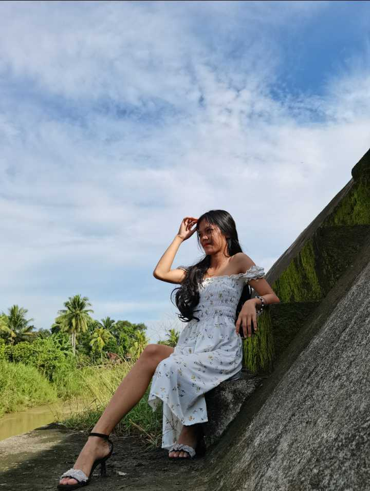
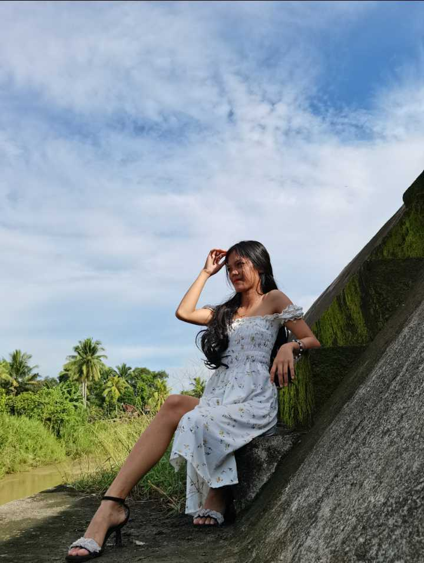

Title: Personal Branding: Shylyn Tapayan's Choice to Use Her Own Photo on Her Website
Introduction: In the digital age, personal branding has become a crucial aspect of self-expression and online presence. For 18-year-old Shylyn Tapayan of Katipunan, Ramon Magsaysay, Zamboanga del Sur, the decision to use her own photo on her website is a deliberate choice that goes beyond mere aesthetics. In this article, we explore the reasons behind Shylyn's decision and how it reflects her commitment to authenticity and connection.
Authenticity in the Digital Space: In a world saturated with curated images and carefully crafted online personas, Shylyn Tapayan stands out by choosing authenticity. Her decision to feature her own photo on her website is a conscious effort to present herself as she truly is, embracing both her vulnerabilities and strengths. In a digital landscape where genuine connections can be elusive, Shylyn's choice serves as a beacon for sincerity.
A Personal Touch to Professionalism: Shylyn recognizes the importance of professionalism, especially in the context of her academic and career pursuits. However, she believes that professionalism doesn't have to come at the expense of personal connection. By featuring her own photo, Shylyn adds a personal touch to her professional endeavors, inviting visitors to her website to see the person behind the accomplishments and aspirations.
Building Trust and Relatability: Using her own photo is Shylyn's way of breaking down the virtual barriers that can exist between a person and their audience. She understands that trust is a fundamental element in any online interaction, and by putting a face to her name, she aims to foster a sense of familiarity and relatability. Shylyn's website becomes a space where visitors can connect with her on a human level.
Empowering Others to Be Seen: Shylyn's choice to showcase her own photo extends beyond her personal narrative; it's also an empowering statement. In a society that often imposes unrealistic beauty standards, Shylyn's decision encourages others to embrace their authenticity. By boldly displaying her own image, she sends a message that everyone deserves to be seen and acknowledged for who they are.
Navigating Stereotypes and Prejudices: As a young woman navigating both academic and professional spheres, Shylyn is aware of the stereotypes and biases that can exist. Using her own photo is a proactive measure to challenge preconceived notions and showcase that individuals, regardless of their background, have the capacity to succeed and make meaningful contributions.
Conclusion: Shylyn Tapayan's decision to use her own photo on her website goes beyond aesthetics; it's a strategic choice driven by authenticity, the desire for connection, and the empowerment of others. In a virtual landscape often dominated by carefully curated images, Shylyn's approach serves as a refreshing reminder that true connection is rooted in honesty and openness. As she continues her journey, Shylyn's commitment to authenticity stands as an inspiring example for others navigating the complex intersection of personal and online identity.